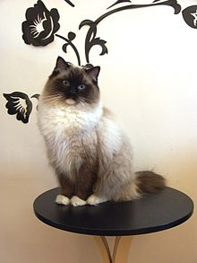

랙돌(ragdoll)은 미국이 원산지인 고양이 품종으로, 조상은 화이트 롱헤어와 버먼이다.
1960년대에 안 베이커는 조세핀(Josephine)이라는 이름을 가진 앙고라 계열이지만 여러 혈통이 섞인 하얀 장모종을 발견했다. 조세핀이라는 고양이는 자동차 사고를 당해 다쳐서 캘리포니아 대학에 있었는데, 베이커는 조세핀이 비밀 정부기관에서 유전자 실험으로 생겨났다고 믿고 있었고, 베이커는 이 고양이와 버만 고양이를 교배시켜 래그돌을 탄생시켰다. 역사가 짧은데다가 한동안 안 베이커가 래그돌 브리딩계를 아주 꽉 잡고 있었기 때문에 유전자풀이 굉장히 좁다.
외형은 6개의 컬러와 3개의 패턴으로 구분되고 있다. 대표적인 패턴은 바이컬러와 미티드이다. 털은 중간 길이이며 매끄럽고 부드러우며 촘촘하다. 길고 단단한 몸통에 짧고 강한 다리를 가진 중대형 종이다. 대형종 고양이로 몸체의 크기와 색채를 완전히 지니기 위해서는 2~3년 안팎이 걸린다.
주인에 대한 사랑이 깊어 현관에서 주인을 반겨주고 따라다니며, 안겨 있는 것을 싫어하지 않으며 함께 품속에서 잠드는 것 또한 즐긴다. 물론 래그돌이라고 하여 모든 래그돌이 안기는 것을 좋아하는 것은 아니다. 하지만 대부분이 온화하고 점잖아서 다른 사람이나 고양이, 개와도 잘 어울린다.
|  |
|---|
| 계:동물계 |
| 문:척삭동물문 |
| 강:포유강 |
| 목:식육목 |
| 과:고양잇과 |